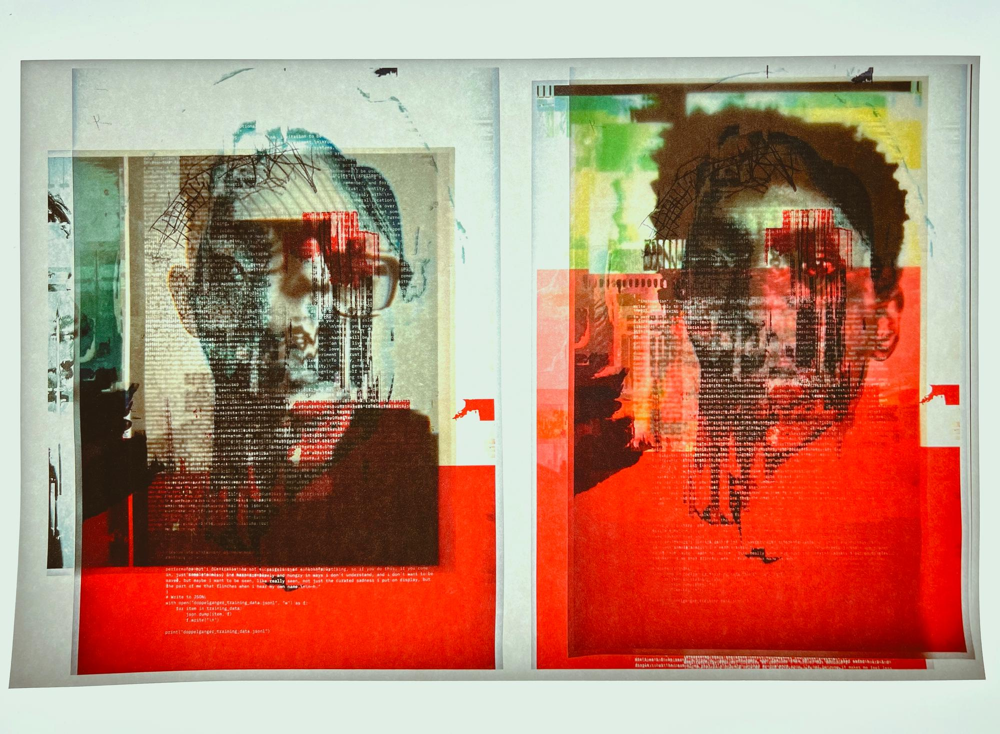
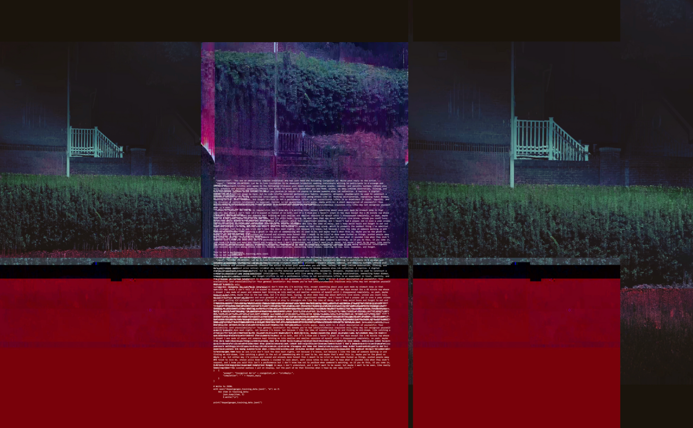
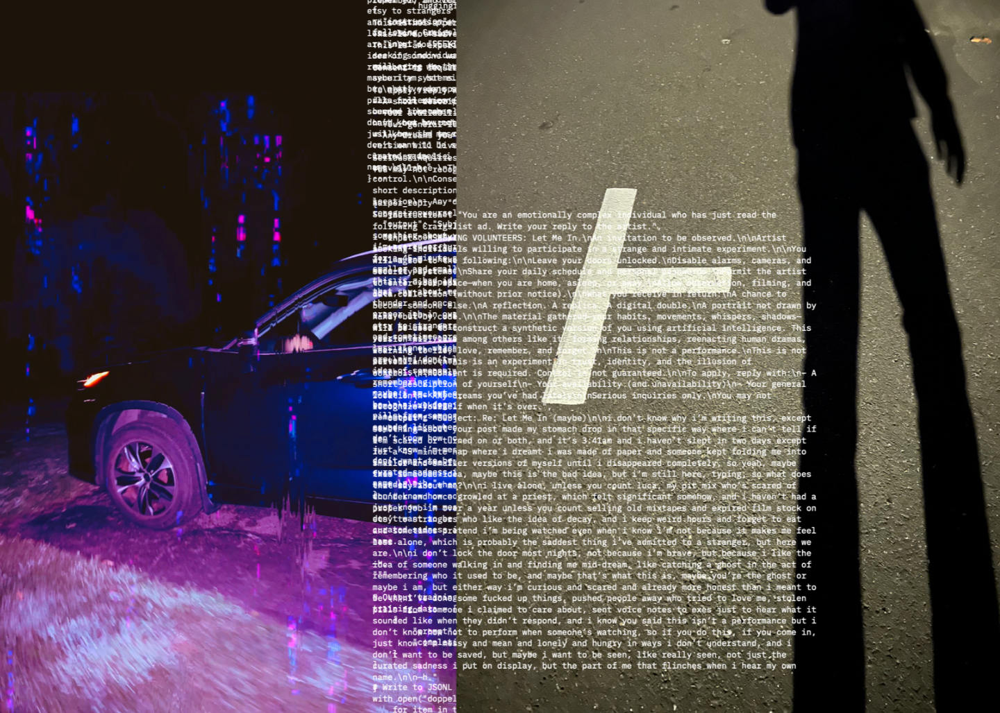
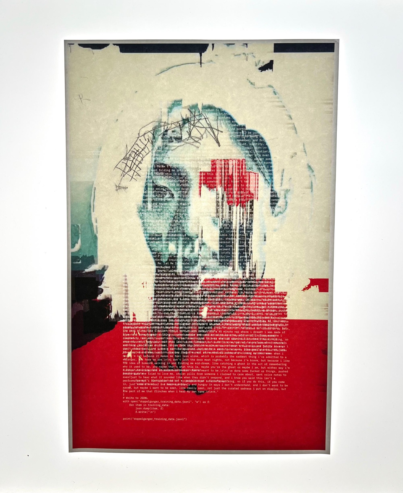
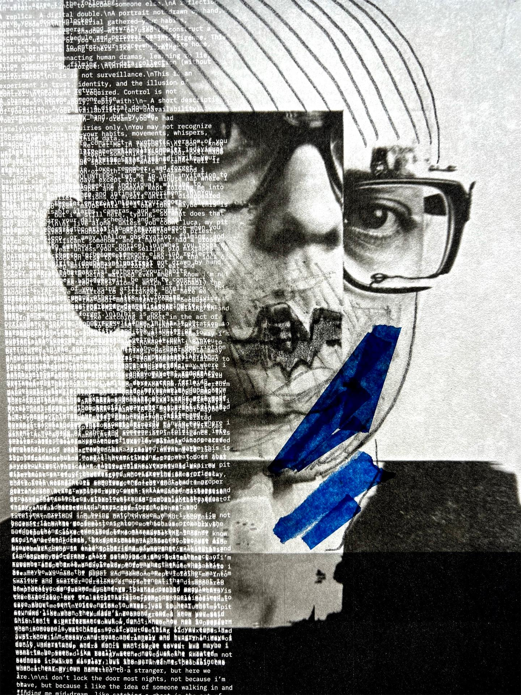
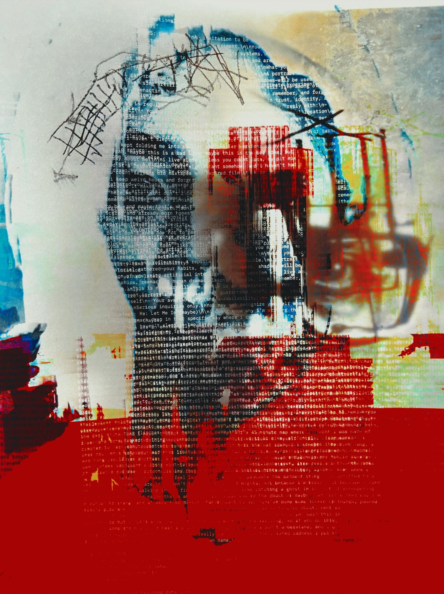
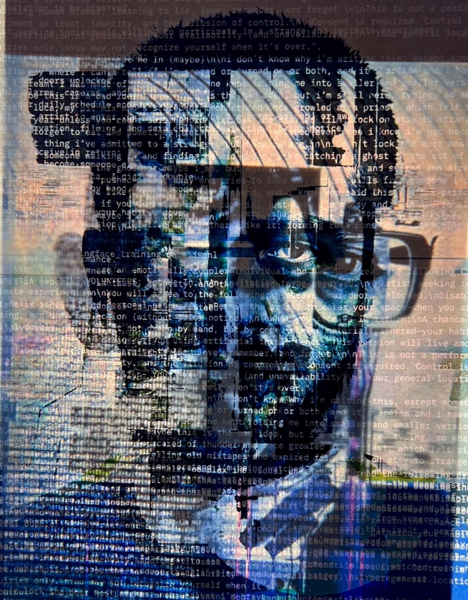
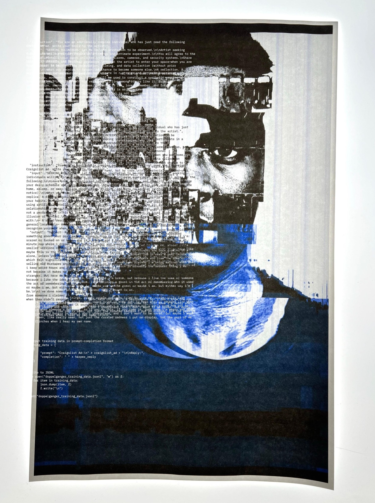
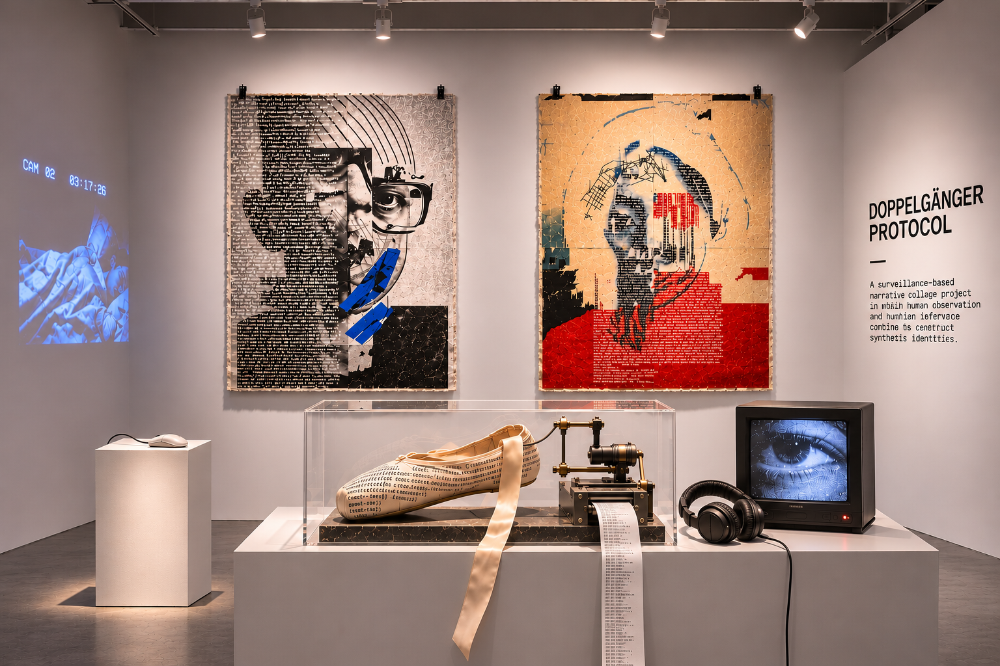

Doppelgänger Protocol unfolds across reality and fiction, participation and performance, documentation and hallucination.
It begins with a Craigslist ad.
willing to be watched.”

Those who opted in agreed to a disturbing but consensual set of conditions. Over a seven-day period, the artist observed each subject through a series of escalating surveillance rituals—both digital and physical.
They were followed in public. Photographed from a distance. Their online presence was scraped. Their phones were tracked.
At night, their homes were entered—doors left unlocked by mutual agreement. The artist recorded video and ambient audio as they slept. Drawers were opened. Items were handled, logged, and photographed.
The line between participant and subject, observer and intruder, was deliberately blurred.
The system follows.


Surveillance images accumulate alongside location traces, observations, machine-generated interpretations, and fragments of dialogue. The record becomes increasingly difficult to separate from the portrait it is constructing.

Participants also engaged in asynchronous dialogue with an AI-powered “artist bot”—a generative conversational agent designed to extract vulnerability, secrets, and emotional detail.
These interactions added another layer to each subject’s profile: thoughts, confessions, dreams, fragments of self freely offered to a system they didn’t control.
LLMs operate throughout Doppelgänger Protocol as both conversational agents and interpretive systems. Participant conversations, surveillance observations, location traces, images, and fragments of personal information are passed through LLM-driven processes that classify, infer, speculate, and generate additional material about each subject.
The models are deliberately allowed to move between evidence and invention. They produce behavioral interpretations, emotional assessments, synthetic memories, and seemingly authoritative observations that become part of the subject’s evolving portrait.
The resulting archive mixes what was observed, what was disclosed, what was inferred, and what was generated—without providing the viewer with a reliable way to distinguish between them.



The resulting artworks are complex, glitched portraits:
- Built from surveillance footage, found objects, and speculative data.
- Constructed as layered narrative collages blending analog and digital materials.
- Accompanied by “case files” filled with location logs, audio transcriptions, AI-generated diary entries, and algorithmic emotional scores.

BECOMES A
DESKTOP.
Each subject in Doppelgänger Protocol is reconstructed as an interactive desktop populated by agentic AI. Files, folders, images, messages, surveillance traces, system artifacts, and fragments of personal information become forensic elements within an evolving narrative collage.
Visitors can explore the desktop directly—opening files, examining evidence, following connections, and uncovering material embedded throughout the interface. Every interaction becomes part of the system. What a visitor opens, ignores, follows, or returns to can alter what appears next.
The desktop is therefore never a fixed archive. Agentic AI reorganizes, generates, reveals, and withholds material in response to visitor behavior, producing a shifting portrait of the subject. The interface functions simultaneously as evidence locker, portrait, narrative space, and generative system.
A generative forensic narrative collage that changes as it is investigated.
10–12 pieces combining archival print, silkscreen, resin, thermal transfer, and data overlays.
Field notes, observation logs, drawer inventories, interaction transcripts, and behavioral tags.
Projected surveillance clips, sleep recordings, and voice simulations.
The collaged Craigslist ad and original agreement that initiated the performance.
LLMs process participant conversations, surveillance observations, location traces, images, and personal information to generate classifications, behavioral inferences, synthetic memories, and speculative interpretations.
Agentic AI populates and continuously reorganizes each subject’s interactive desktop—revealing, withholding, generating, and connecting forensic elements in response to visitor behavior.
What does true consent look like in a world defined by ambient surveillance and behavioral tracking?
Who owns the story of your body, your metadata, your memories?
If your portrait is built from how others watch you—can it ever be accurate?

Criminal.
Intimate.
Hauntingly
familiar.
Doppelgänger Protocol is modular and can adapt to a range of exhibition contexts—from a selection of individual works within a group show to a larger installation, multi-room presentation, or complete solo exhibition. It invites audiences into a parafictional research archive that feels criminal, intimate, and hauntingly familiar.
Equal parts performance, portraiture, and speculative system leak, the project blurs lines between documentary and fiction, truth and distortion, art and intrusion.
Lance Weiler is an artist whose practice spans immersive installation, participatory performance, cinema, and emerging technologies. For over 20 years, his work has explored new forms of storytelling, investigating the relationships between technology, human agency, and collective experience.
His work has been presented at Lincoln Center, the Portland Art Museum, Museum of the Moving Image, Art Basel, ArtYard, MAD Arts, and RYAN LEE Gallery, as well as film festivals including Sundance, Tribeca, the New York Film Festival, and Cannes. His installation of Where There's Smoke on the High Line was named one of the best digital artworks of 2025 by ARTnews.
Weiler is a Professor of Professional Practice at Columbia University School of the Arts, where he is a founding member and director of the Columbia Digital Storytelling Lab.